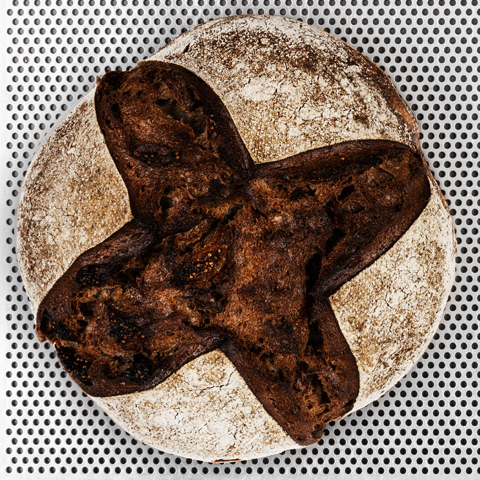
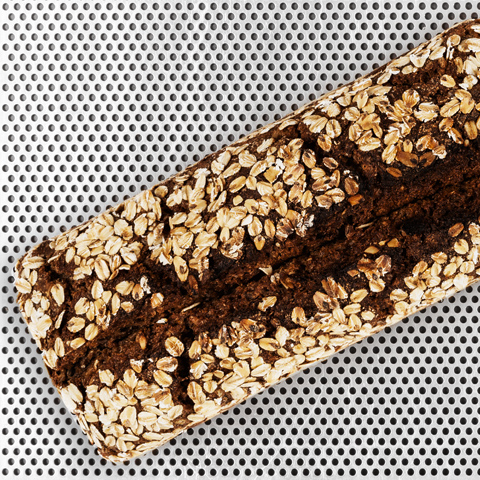
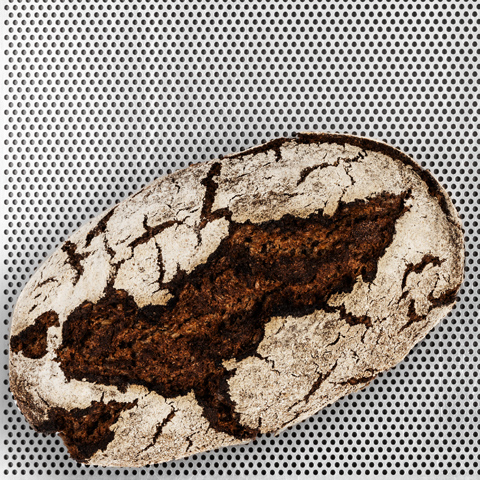
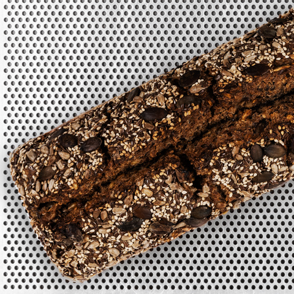
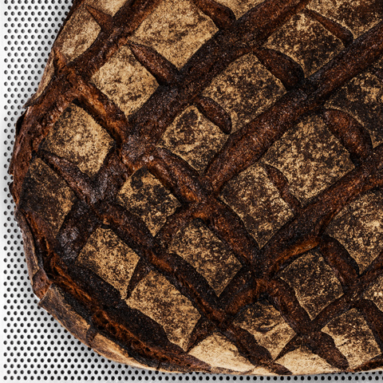
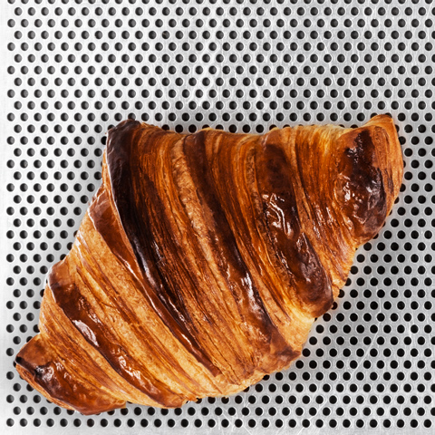
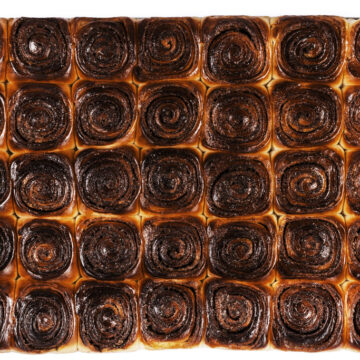
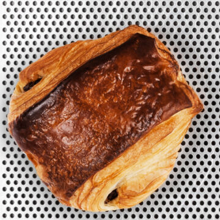

Wir verstehen uns in erster Linie als Brotversorger, erfreuen uns aber immer wieder aufs Neue, kleine feine Gebäcke zu entdecken, und je nach Saison anzubieten, um im Garten der GFZK oder in den nahegelegenen Parks die Seele baumeln zu lassen. Zur Zeit packen wir sie Euch aber gerne für zu Hause ein. Auf dass wir alle gesund diese Zeit überstehen.
Von Dienstag bis Freitag bieten wir Brote, Süßes und Herzhaftes und Focaccia an. Wir setzen auf Sauerteig geführte Teige, die lange reifen und durch Aromen glänzen
We see ourselves primarily as a bread supplier, delight us, but again and again, small fine pastries to explore, and depending on the season, to offer, to let in the garden of the Museum of contemporary ART or in the nearby Park, the soul. At the time we pack you like to for the home. That we will survive all be healthy this time.
From Tuesday to Friday we offer loaves of bread, Sweet and Hearty, and Focaccia. We rely on sourdough led dough, which is a long time to Mature, and by aromas Shine.

DAILY AVAILABILITY:
DIENSTAG bis FREITAG: BROT
- Backstein
- Monte Rosa
- Baguette
- Olivenbâtard
- Focaccia
(Margherita, Marinara) von 1100
FEINE GEBACK
- Croissants
- Pain au Chocolate
- Cinnamon rolls
- Cheese stängli
DIENSTAG:
- Deep Purple
- Haferkante
- Sejerlänner
- Husky
FREITAG:
- Salve
- Walnut
- Hamsterbacke
DAILY AVAILABILITY:
TUES TO FRI: BREAD
- Backstein
- Monte Rosa
- Baguette
- Olivenbâtard
- Focaccia
(Margherita, Marinara) from 11:00
PASTRIES
- Croissants
- Pain au Chocolate
- Cinnamon rolls
- Cheese stängli
TUES:
- Deep Purple
- Haferkante
- Sejerlänner
- Husky
FRI:
- Salve
- Walnut
- Hamsterbacke
BACKSTEIN
1kg / 5,60€
Mit diesem Brot fing alles an, deswegen verdient es auch den Namen. Ein Weizensauerbrot mit leicht saurer Note, mittel bis grobporiger Krume und einer krossen Kruste. Als 1 kg frei gebacken. Weizen*,Wasser,Salz
This bread has all started therefore it deserves the name. A wheat sourdough bread with a slightly sour Note, medium-to coarse-pored crumb and a crispy crust. Than 1 kg free baked. Wheat*,Water,Salt
MONTE ROSA
1kg / 5,20€
Inspiriert von einem Rezept aus dem Wallis, besteht dieses Brot zu 100% aus Roggenschrot und trägt in Hinsicht auf seinen Ursprung den Namen des höchsten Berges im Wallis, dem Monte Rosa. Mit Mehl von unserer Mühle in Sachsen. Als 1 kg Brot frei gebacken. Roggen*,Wasser,Salz
Inspired by a recipe from the Canton of Valais, this bread is 100% made from rye meal and contributes in terms of its origin, the name of the highest mountain in the Canton of Valais, the Monte Rosa. With flour from our mill in the state of Saxony. As of 1 kg of bread free baked. Rye*,Water,Salt
OLIVENBATARD
300g / 3,50€
Baguette mit Kalamata-Oliven* Weizen*,Wasser,Salz,Hefe,Gerstenmalz*, Kalamata-Oliven
Baguette with Kalamata olives* Wheat*,Water,Salt,Yeast,Barley Malt*, Kalamata Olives
DEEP PURPLE
750g / 6,50€
Ein Weizenmischbrot mit gerösteten Walnüssen und Feigen. Die Krumenfarbe ist durch die Walnüsse leicht purpurfarben, die Feigen stehen für das ”deep“. Das Weizen*,Roggen*,Wasser, Walnüsse*,Feigen,Salz, Gerstenmalz*
A mixed wheat bread with roasted walnuts and figs. The crumb color is due to the walnuts, slightly purple, the figs are for the ”deep“. The Wheat*,Rye*,Water, Walnuts*,Figs,Salt, Barley malt*
HAFERKANTE
1kg / 6,50€
Gleicher Teig wie das Sejerlänner, nur im Kasten gebacken und mit Haferflocken rundum benetzt. Roggen*,Weizen*,Wasser, Roggenkörner,Haferkörner,Salz, Gerstenmalz*
The same dough as the Sejerlänner, only in a box and baked with oatmeal thoroughly wetted. Rye*,Wheat*,Water, Grains Of Rye,Oats, Grains,Salt, Barley malt*
SEJERLÄNNER
1kg / 6,20€
Ein Roggenmischbrot aus der Heimat des Bäckermeisters Weit genug, um das Rezept leicht zu interpretieren. Mit ganzen verquollenen Roggen- und Haferkörnern. Für die malige Note sorgt ein Aromastück. Roggen*,Weizen*,Wasser, Roggenkörner,Haferkörner,Salz, Gerstenmalz*
Is a rye bread from the home of a master Baker Far enough to interpret the recipe slightly. With all swollen rye and oat grains. For the repeated Note is an aromatic piece provides. Rye*,Wheat*,Water, Grains Of Rye,Oats, Grains,Salt, Barley malt*
HAMSTERBACKE
1kg / 8,00€
Auf Basis eines Weizenmischteiges mit ganzen verquollenen Roggen- und Haferkörnern, gerösteten Ölsaaten und einem Aromastück, das für eine milde Säure und leichte Malznote sorgt. Weizenmehl*,Roggenmehl*,Wasser, Roggenkörner,Haferkörner,Kürbiskerne, Sonnenblumenkerne,Sesam*,Leinsaat, Salz,Gerstenmalz*
On the Basis of a mixed wheat dough with whole swollen rye and oat grains, roasted Oilseeds and aroma piece that makes for a mild acidity and slight maltiness. Wheat Flour*,Rye Flour*,Water, Rye Grains,Oat Grains,Pumpkin Seeds, Sunflower Seeds,Sesame Seeds*,Flax Seeds, Salt,Barley Malt*
SALVE
1kg / 5,80€
Alte steingemahlene Weizensorten versäuert und mit Ruchmehl, kühl und langsam geführt. Als über 3kg Laib gebacken. Weizen*,Roggen*,Wasser,Salz,
Old stone ground wheat varieties soured and Ruchmehl, cooling, and slowly led. Than 3kg loaf and baked. Wheat*,Rye*,Water,Salt,
CROISSANTS
2,50€
Weizen*, Wasser, Milch*, Butter, Ei*, Salz, Zucker, Gerstenmalz*, Hefe
Wheat*, Water, Milk, Butter, Egg, Salt, Sugar, Barley Malt*, Yeast
ZIMTSCHNECKEN
3,50€
Weizen*, Wasser, Milch*, Butter, Ei*, Salz, Zimt, Zucker, Gerstenmalz*, Hefe
Wheat*, Water, Milk, Butter, Egg, Salt, Cinnamon, Sugar, Barley Malt*, Yeast
PAIN AU CHOCOLATE
2,80€
Weizen*, Wasser, Milch*, Zartbitterschokolade, Butter, Ei*, Salz, Zucker, Gerstenmalz*, Hefe
Wheat*, Water, Milk, Dark Chocolate, Butter, Egg, Salt, Sugar, Barley Malt*, Yeast